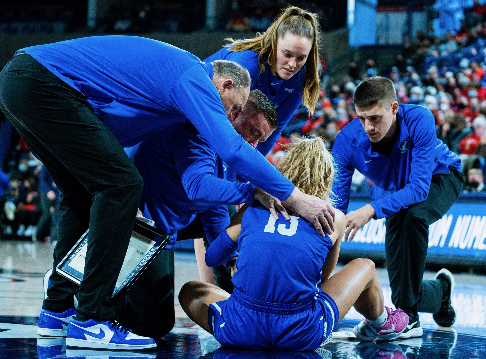

What I Love Most
The Coaching Staff
I couldn't ask for greater mentors and leaders than I have had throughout my life. This coaching staff is no exception to that. They have taught me what it means to be a leader. They have taught me great principles in being a parent and a friend. The course of my life has changed because of my relationships with these outstanding people.

The Players
Getting to know these players has been so exciting. I've always had great respect for student athletes; however, that has only increased as I have got to know and spend time with these athletes on a personal level. Seeing the struggle and overcome those struggles has been incredible.
The Game
There is something special about the game of basketball. I've experienced some of my greatest highs and some of my most painful lows through this game. There is nothing I would do to change this game.